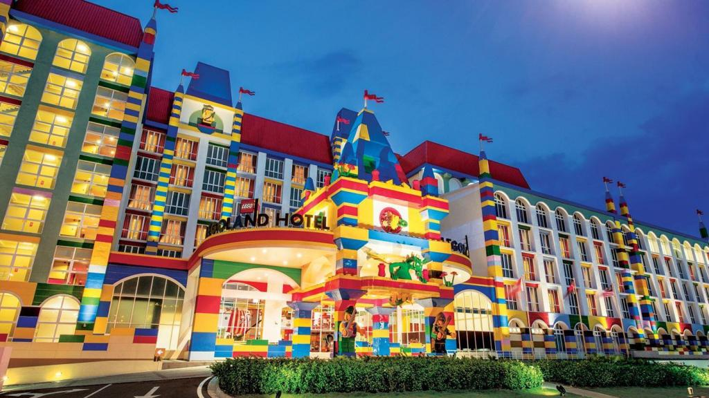
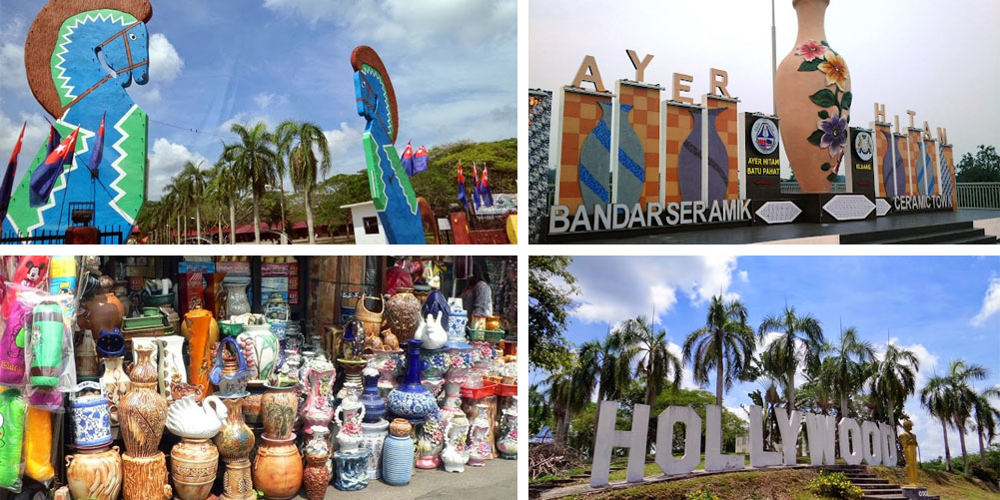
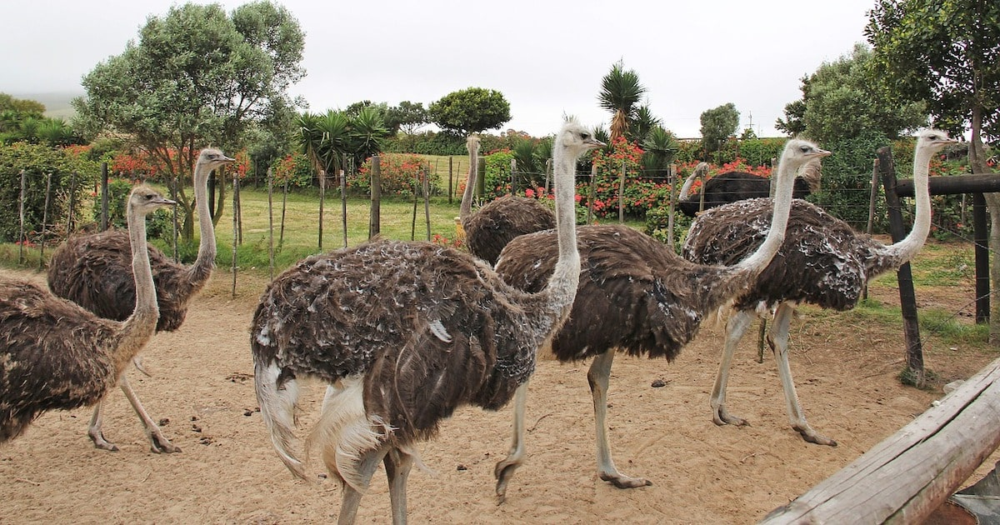
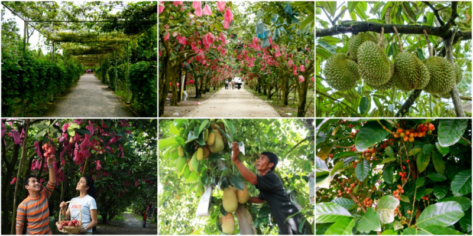
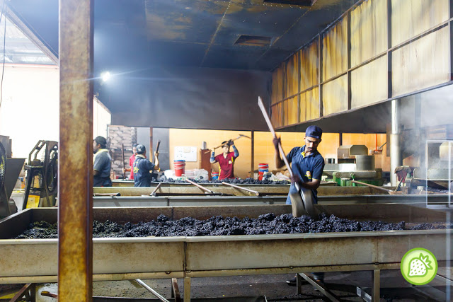

Johor is the southernmost state in Malaysia, located on the Malay Peninsula’s tip. Capital Johor Bahru (or ‘JB’) acts as the gateway into Singapore. Despite lacking the touristic nature of its Malaccan neighbour, it’s worth staying here for a night on a stopover. The state’s most fascinating highlight is the somewhat unusual Sultan Abu Bakar State Mosque. Rather than the traditional domes, this mosque looks almost Victorian. From a distance, the four minarets resemble British Malayan clock towers. Step away from JB and find celebrity-standard resorts on Rawa Island and an (almost) secret diving oasis on Sibu Island.

Legoland Malaysia
LEGOLAND Malaysia Resort - Asia's first LEGOLAND theme park & Malaysia's 1st international theme park.
Address: No 7, Jalan Legoland, Bandar, 79250 Johor Bahru, Johor

Ayer Hitam
Ayer Hitam is a town in Batu Pahat District, Johor, Malaysia. Located just at the junction of Federal Route and Federal Route, it is known for its many outlets selling pottery and other crafts. It also is one of the interchange for North–South Expressway.

Desaru Ostrich Farm
Address: Jalan Telok Ramunia, Kampung Changi, 81600 Pengerang, Johor

Desaru Fruit Farm
Address: 92, 82200, Johor

Kluang Coffee Powder Factory Sdn Bhd
Address: 76, Jalan Besar, Kampung Yap Tau Sah, 86000 Kluang, Johor